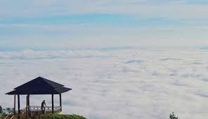

Pango-Pango
Kabupaten Tana Toraja di Sulawesi Selatan tidak selalu mistis. Itu karena pelancong juga bisa menemukan landmark yang indah di beberapa bagiannya. Misalnya, ada Pango-Pango. Ini adalah daya tarik alam yang terletak di Makale. Jaraknya hanya sekitar 7 km dari lokasi tersebut. Pango-Pango sebenarnya adalah dataran tinggi yang belum terjamah. Penduduk setempat menyebutnya "negeri di atas awan". Singkatnya, Pango-Pango adalah hutan yang terletak di puncak bukit yang menjadi lokasi yang sempurna untuk relaksasi dan menghilangkan stres berkat suasana alam yang indah. Begitu sampai di Pango-Pango, Anda bisa melihat pepohonan dan semak rindang yang hijau. Untungnya, sudah disediakan jalan untuk berjalan. Jalan ini membantu pengunjung untuk menjelajahi lokasi dengan nyaman. Di tempat bukit tertentu, Anda bisa menemukan gazebo dan beberapa tempat duduk. Dari situ, wisatawan bisa menyaksikan pemandangan alam yang indah dan menikmati angin segar sambil bersantai. Untuk pengalaman terbaik, lebih baik membawa teropong. Juga, Anda perlu memakai pakaian yang tebal dan jaket karena atmosfernya bisa sangat dingin, terutama di pagi hari. Sepatu yang tepat juga diwajibkan untuk memudahkan Anda mendaki. Dulu, tentara Jepang menggunakan lokasi ini untuk memantau pergerakan musuh. Mereka menganggap Pango-Pango sebagai lokasi yang strategis untuk melakukan pemantauan karena letaknya yang paling tinggi. Hari ini, Pango-Pango menjadi tempat wisata yang direkomendasikan di Kabupaten Tana Toraja. Bagi Anda yangingin menikmati keindahan alam di daerah ini, terutama pemandangan gunung, ini adalah lokasi yang tepat. Banyak dpohon pinus tumbuh di lokasi ini, semuanya teduh dan hijau. Dengan demikian, nuansa menjadi sejuk dan nyaman. Bahkan Anda sama sekali tidak akan merasakan panasnya matahari. Dari puncak bukit, Anda bisa melihat Kota Makale. Pemandangan kota memang megah. Selain tamasya, Anda juga bisa menikmati sunset yang menakjubkan. Karena itu, pastikan untuk datang pada waktu yang tepat. Biasanya menjelang senja. Dengan semua fitur cantik ini, jangan lupa untuk membawa kamera. Banyak objek menarik dan indah yang tersedia di daerah ini. Pastikan untuk menangkap semuanya dengan kamera atau smartphone Anda. Sebagai alternatif, teropong adalah ide yang bagus. Ini membantu Anda menyaksikan pemandangan dengan cara yang lebih baik dan jelas. Baru-baru ini, wahana permainan outbond seperti flying fox sudah mulai dibangun untuk mendukung tempat wisata ini. Flying fox ini memiliki panjang lintasan 120-150 meter dengan waktu kurang lebih 20 detik. Untuk menguji Adrenalin, Anda dapat mencobanya. Kegiatan menarik lainnya untuk dilakukan di Pango-Pango adalah sebuah pengamatan. Dalam hal ini, wisatawan diperbolehkan mengamati keseluruhan proses perkebunan. Belum lagi Anda diperbolehkan memilih dan memetik buah dan sayuran di daerah ini. Komoditas yang paling terkenal adalah Kopi Toraja. Yang lainnya adalah tamarillo, kakao, kacang tanah, dan jagung. Setelah Anda merasa lelah, Anda bisa bersantai di gazebo yang sudah disediakan. Paling tidak, ada 11 gazebo yang sudah dibangun. Wisatawan bisa menggunakannya dengan bebas! Pango-Pango terletak di Makale. Pertama, Anda harus menuju ke Kabupaten Tana Toraja. Anda dapat langsung ke Tana Toraja naik pesawat Trans Nusa dari Kota Makassar. Apabila menggunakan jalur darat, dibutuhkan 305 km dari Makassar dan perjalanannya menghabiskan 7-8 jam. Ketika sampai di rute, Anda harus mengambil Jalan Poros Barru - Makassar. Bagaimana dengan transportasi? Bisa jadi segala jenis kendaraan. Namun, mobil sewaan atau kendaraan pribadi paling direkomendasikan.